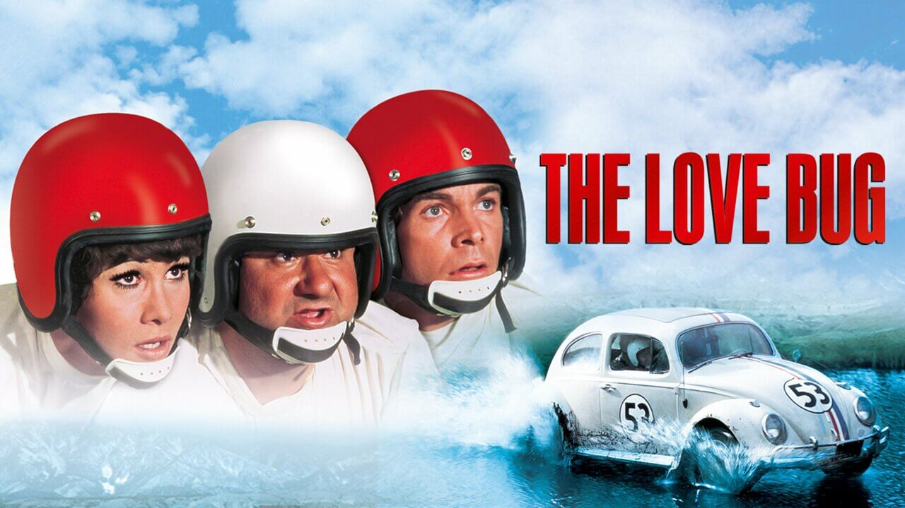

Gyártó
Volkswagen
Darabszám
21 529 464
Gyártási Év
1938 - 2003
Valószínűleg a New York Times használta először, 1938. július 3-án megjelenő cikkében a „Bogár” szót, amelyben „ezer és ezer csillogó kis bogarat” vizionál, amelyek be fogják népesíteni a német utakat.
Miután az autó az 1950-es években egyre nagyobb népszerűségre tett szert az Amerikai Egyesült Államokban, fokozatosan meghonosodott a szeretetreméltó Bogár (Beetle vagy Bug) becenév. A Volkswagen csak az 1960-as években vette át a Bogár megnevezést reklámkampányaiban, miután az autó a „Kicsi kocsi” filmekkel sztár lett és a Bogár név Németországban is elterjedt Käfer néven.
Az 1930-as években Adolf Hitler a náci Németország vezetője Ferdinand Porschét választotta, hogy tervezzen meg egy "népautót", vagy németül "Volkswagen" – egy megfizethető tömegautót, amely családot és csomagokat szállíthat. Egy kétajtós, hátsó motoros járművel álltak elő, amely 100 km/h végsebességgel tudott utazni. Az autó kezdeti gyártása kicsi maradt.
 Eltartott egy ideig, amíg a Bogár népszerűvé vált az Egyesült Államokban, részben az autó náci gyökerei miatt. Ám az 1960-as évek marketingújítása és az autó főszerepe az 1968-as "The Love Bug" című filmben, mint Herbie (a képen), egy önálló gondolkodású Bogár, megpecsételte helyét az amerikaiak szívében – és garázsaikban egyaránt.